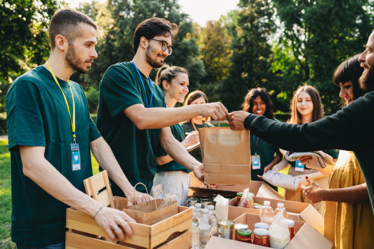
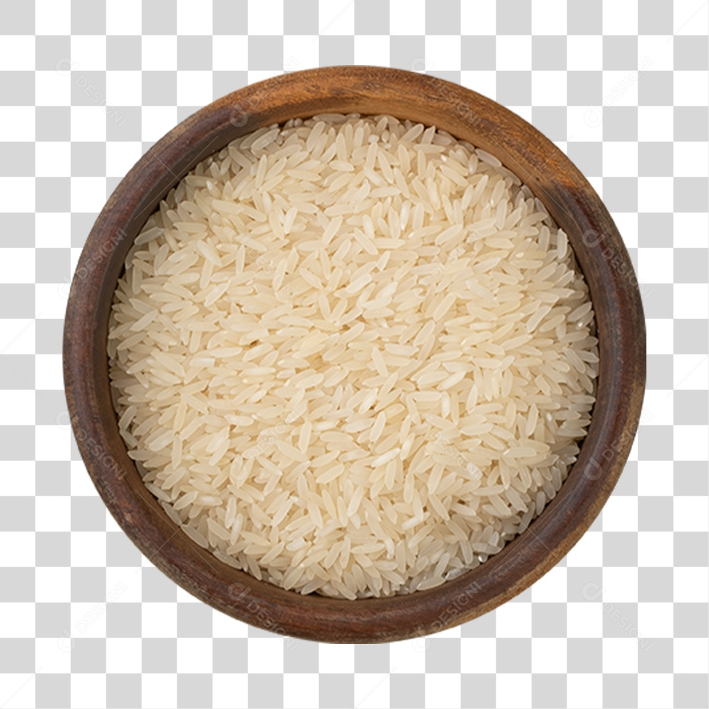
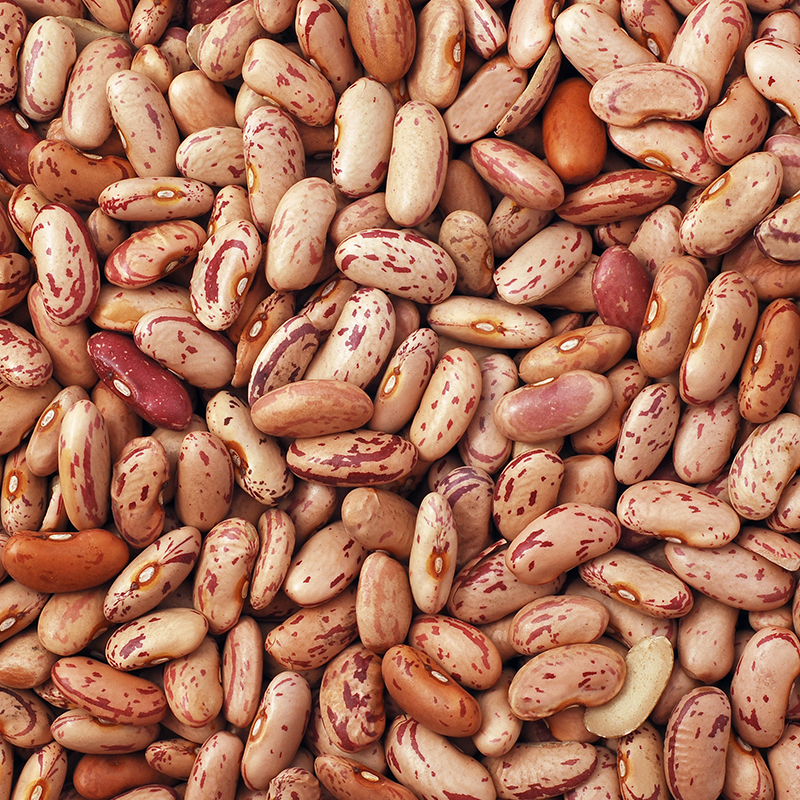
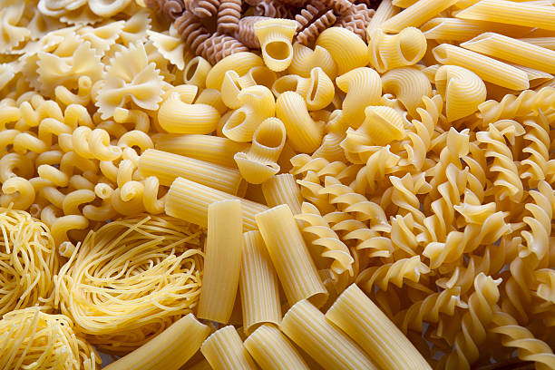
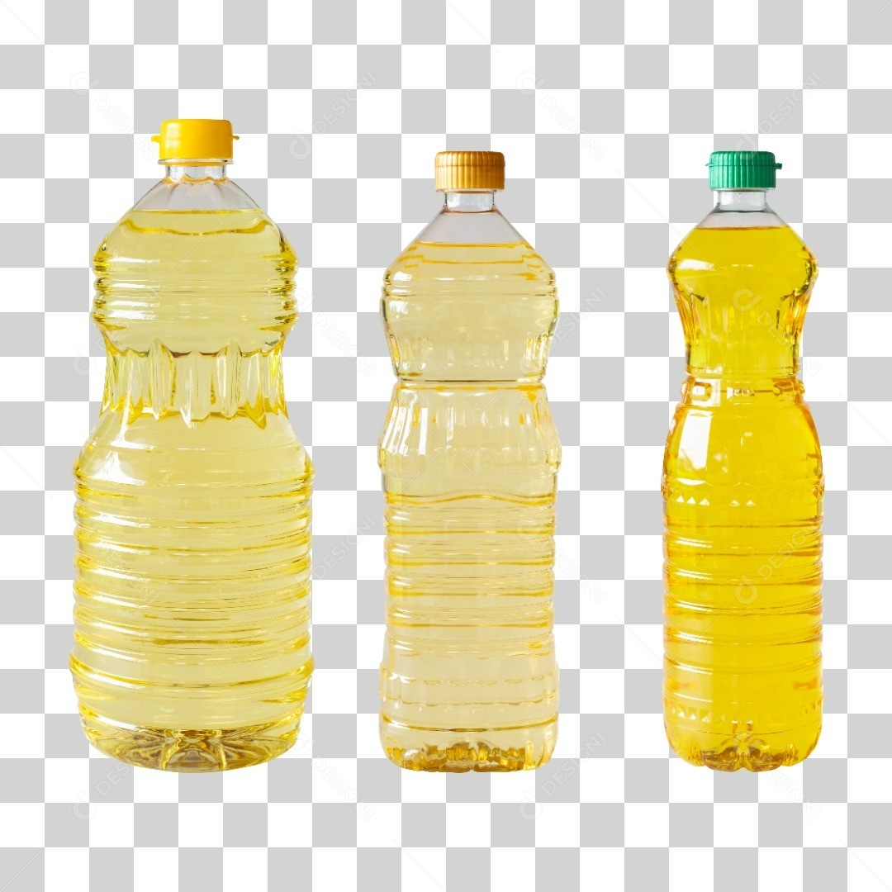
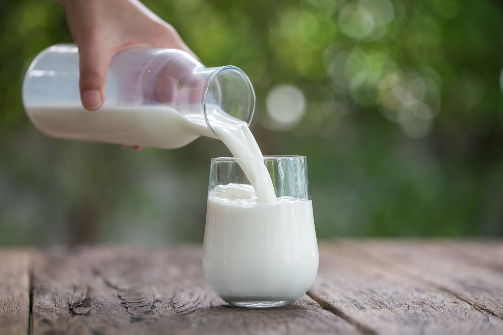
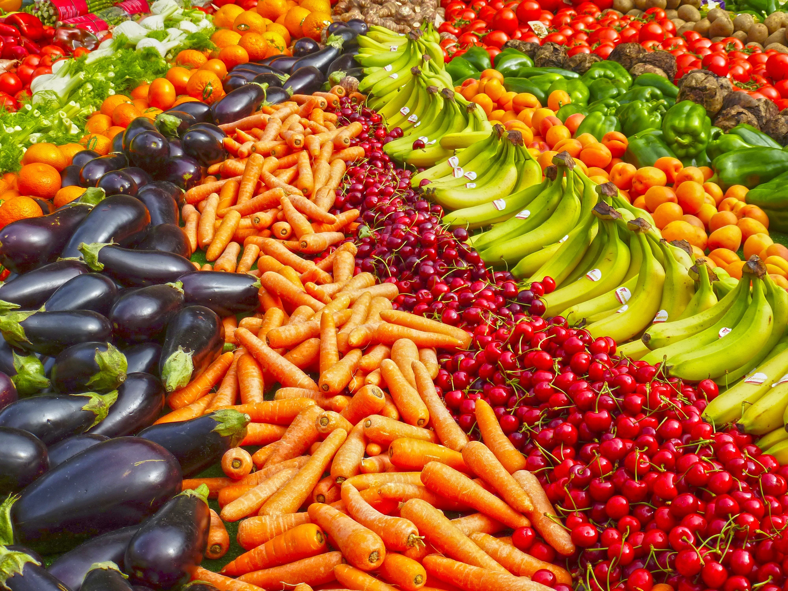
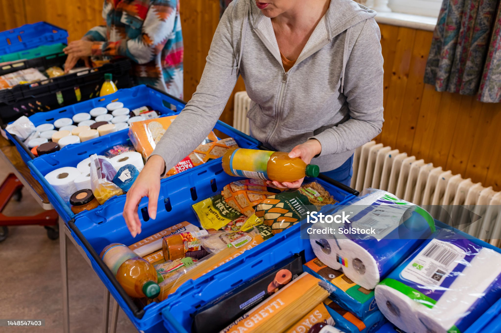

DOAÇÕES
Sua doação alimenta a esperança
Com a sua ajuda, conseguimos levar alimentos,
apoio e dignidade para milhares de famílias em situação
de vulnerabilidade. Doe e faça parte dessa corrente do bem

DOAÇÃO DE ALIMENTOS
O que você pode doar?
Aceitamos alimentos não perecíveis e itens de primeira necessidade.
Confira alguns exemplos do que você pode doar:

Arroz

Feijão

Macarrão

Óleo

Leite

Outros alimentos
Doação financeira
Sua contribuição em dinheiro também faz toda diferença.
Com ela, conseguimos comprar alimentos, manter nossos
projetos e ampliar o atendimento ás famílias.

Doação financeira
Preencha seus dados para registrar sua intenção de contribuição.
Doação registrada!
Seu formulário foi enviado com sucesso. Obrigado por contribuir!
Doação de alimentos
Preencha o formulário ao lado para
nos informar sobre sua doação.
Formas de contribuir
Como doar?
Você pode contribuir de diversas formas. Escolha a que mais combina com você:
Doação de alimentos
Entregue alimentos não perecíveis
em nossos pontos de arrecadação
ou em eventos parceiros.
Doação financeira
Contribua com qualquer valor
e ajude a manter nossos projetos
em funcionamento.
Campanhas solidárias
Participe de campanhas, mobilize
sua empresa, escola ou comunidade
e ajude a ampliar ess rede de solidariedade.
Pontos de arrecadação
Encontre o ponto de coleta mais
próximo de você e faça a sua doação.
SUA DOAÇÃO GERA IMPACTO
Juntos, multiplicamos boas atitudes
Cada doação é um gesto de solidariedade que alimenta
vidas e constrói um futuro melhor para todos.
25.430
refeições distribuídas
em 2026
8.240
famílias atendidas
1.250
voluntários
ativos
85
pontos de arrecadação